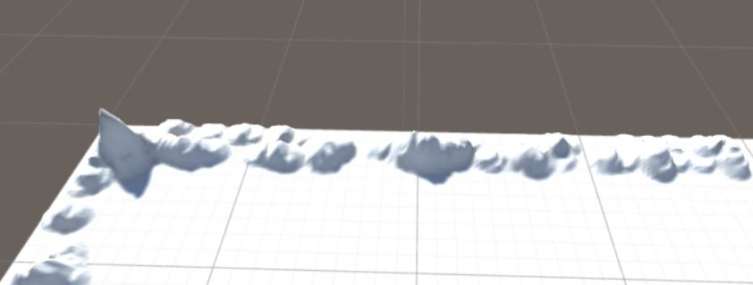
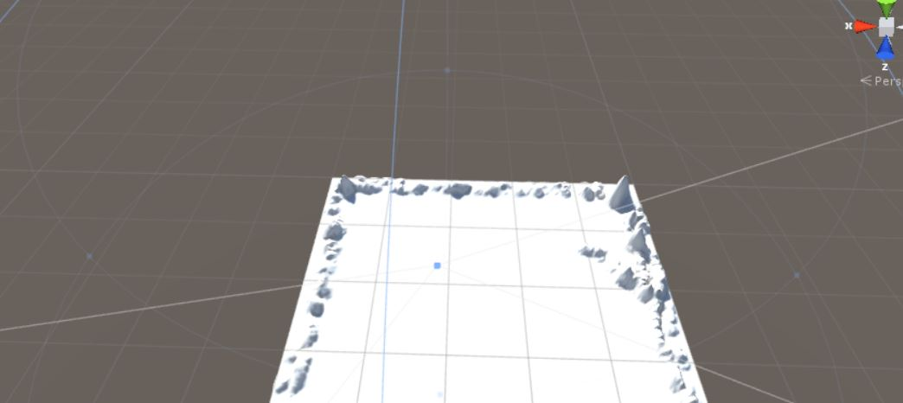
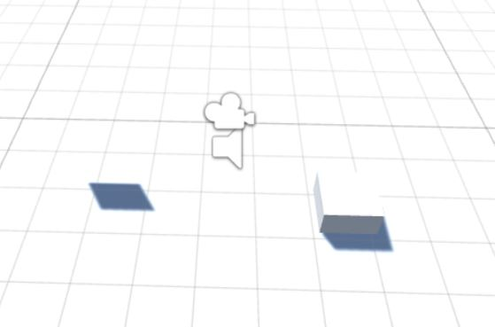
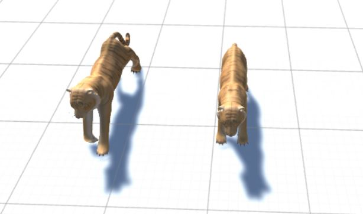
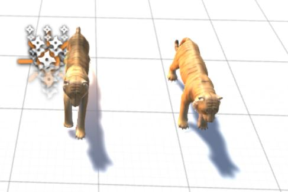

Ten eerste heb ik op het landschap bergen gemaakt. De bergen gaan langs alle randen van het gebied.

Ten tweede heb ik een player toegevoegd aan het landschap. Door het pakket de downloaden kon ik als persoon zelf door de wereld lopen. Door de peilen op het toetsenbord te gebruiken kun je door het landschap lopen.

Bij nummer drie heb ik verschillende soorten objecten op het landschap gezet. De verschillende soorten objecten staan niet allemaal op de grond. De gene hangt ook in de lucht waardoor je alleen maar de schaduw ziet van het object.

Nu heb ik twee verschillende objecten, de tijgers op het landschap gezet. De twee objecten komen van een store die in het programma staat. De objecten zijn gedownload en ik het landschap gezet.

Als laatste als je naar de tijgers loopt dan zal het vuur aan gaan. Doordat er een stukje code in het programma gezet is zal het vuur aan blijven en niet na een paar seconde uit gaan.

Verder heb ik het onderdeel processing niet kunnen doen omdat ik een windows computer heb. In de opdracht stond dat het niet lukt om de opdracht te doen met een windows computer. Ik heb samen met een klasgenoot het geprobeert en inderdaad lukte het ons niet om de opdracht te maken.